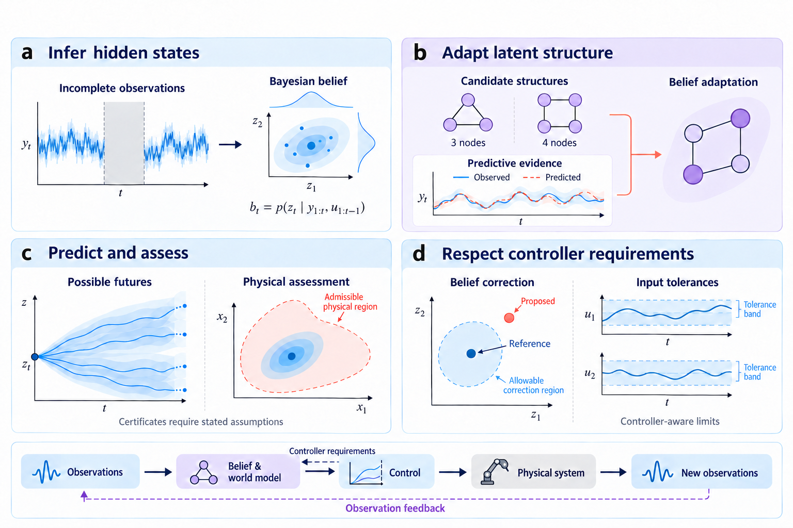

Estimation and ControlWorld Models, Cognitive Flexibility, and Predictive Control How can intelligent systems estimate hidden states, adapt their internal models, and make reliable control decisions under uncertainty? My research connects probabilistic state estimation, cognitive flexibility, learned world models, and controller-aware predictive control. Together, these directions investigate how uncertainty-aware inference and prediction can inform decisions in dynamical and robotic systems.  Figure: World Models and Control. Panels (a)–(d) illustrate belief-based state inference, latent-structure adaptation, stochastic prediction with physical assessment, and controller-aware belief corrections, respectively. The lower loop represents feedback between observations, internal models, control, and the physical system; the reverse connection indicates how controller requirements can inform inference. The panels connect distinct studies rather than a single validated architecture. Their theoretical guarantees are subject to the assumptions of the respective studies. Research Themes and Selected WorkThe following themes summarize the underlying research questions, methodological contributions, and selected studies. (a) State Estimation and Belief ModelingWhat can a system infer when observations are incomplete? A world model describes how hidden states evolve and how observations arise. Under partial observability, a system must maintain a belief about what it cannot directly observe. Deep Stochastic State-Space Models (Deep SSSM) combine probabilistic encoding, stochastic latent transitions, and variational inference to connect observations with uncertain latent states. This research links Bayesian state estimation with learned representations, providing the inference foundation for prediction under noise and occlusion. Seeing Beyond Vision: research overview | Deep SSSM: study details (b) Cognitive Flexibility and Structural AdaptationWhat should change when parameter tuning cannot repair model mismatch? Cognitive Flexibility selects among latent structures using innovation-based predictive evidence while preserving the Bayesian filtering recursion. It treats the internal representation itself as an object of adaptation. Robust CF addresses uncertainty in that evidence. Switching margins account for noisy innovation scores, while a batch-split estimator uses existing particles to inform online margin calibration as the noise scale changes. The guarantees depend on the stated score-noise and effective-margin conditions. Hysteretic Selection complements these studies by examining how sample size, Monte Carlo refreshes, and switching margins affect switching and recovery. It distinguishes changes in the evidence from changes caused by refreshing samples, showing why fewer switches can coexist with persistent wrong decisions.
Selected work: (c) World Models and Uncertainty QuantificationWhich futures can a model predict, and what can its beliefs certify? Deep SSSM studies stochastic latent dynamics and uncertainty propagation for occlusion-robust robotic prediction. Its variational framework connects representation learning with prediction, laying a modeling foundation for future predictive and Bayesian model predictive control. SafeCF-SSM examines the interface between latent beliefs and physical constraints. A realizability test combines channel-wise decoder error with belief uncertainty; predictive surprise regulates adaptation and safety margins. Each constrained channel is certified under the stated assumptions or explicitly declared uncertifiable under the given codec. In the reported quadrotor rotor-failure simulation, attitude channels remain certifiable while altitude is declared uncertifiable. This makes the physical-latent gap explicit and checkable.
Selected work: (d) Estimation-Informed Predictive ControlHow do estimation uncertainty and model fidelity affect predictive control? This theme examines two complementary interfaces between estimation, modeling, and control: controller-aware belief correction and physics-consistent predictive modeling. Neural Belief MPC establishes controller-aware budgets for belief corrections and same-context adaptation within a known affine MPC cell. The analysis distinguishes tolerances on the currently applied input from those imposed on the full predicted input sequence, revealing how belief changes may propagate differently across the prediction horizon. The resulting certificates establish plan-consistency bounds under stated assumptions, without implying true-state accuracy, nonlinear safety, or recursive feasibility. Quantum-Transport-Informed Digital-Twin MPC investigates how physical model fidelity influences predictive control of metal-hydride hydrogen storage. It integrates quantum-corrected transport dynamics and physics-consistent parameter estimation into a multi-fidelity digital twin for MPC. The study analyzes conditional closed-loop stability and the performance consequences of transport-model mismatch, linking physical fidelity to control performance.
Selected work: Toward Compliant IntelligenceThe longer-term direction brings these research themes into physical interaction: connecting uncertainty-aware tactile perception, stochastic belief, structural adaptation, and adaptive decision making in compliant robotic systems. Feel → Believe → Adapt → Decide → Interact Co-Flex, a direction in preparation, asks when and how often a model structure may switch within a closed loop. Hysteretic Selection provides a related study of switching and recovery and remains a separate work. Physical embodiment builds on earlier work in compliant pneumatic-artificial-muscle control and connects to Tactile Intelligence. Integrating the full belief-to-interaction pipeline remains a research objective; the studies above address its individual components. Related work on compliant actuation | All publications Thanana Nuchkrua | Control & Robotics Research |